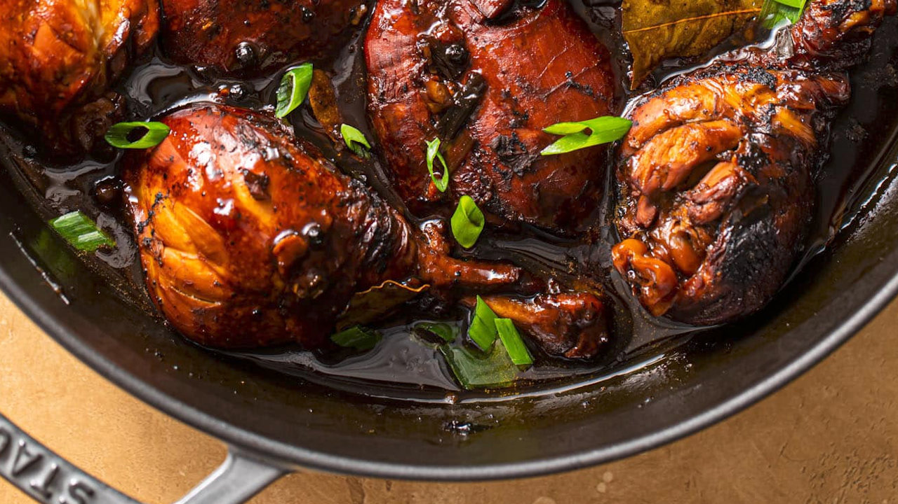

Chicken Adobo
Return to Recipes

Description
A traditional Filipino dish, sweet, salty, tangy, and garlicy dish that's simple to make.
Ingredients
- 1 Tbsp. vegetable oil
- 4 skin-on, bone-in chicken thighs
- 4 chicken drumsticks
- 1 head of garlic, halved crosswise
- 5 dried bay leaves
- 3/4 cup distilled white vinegar
- 3/4 cup soy sauce
- 1 Tbsp. light or dark brown sugar
- 2 green chiles (such as serrano or jalapeño), thinly sliced, seeds removed if desired, divided
- Freshly ground black pepper
- Cooked rice (for serving)
Instructions
- Heat oil in a large Dutch oven over medium. Cook chicken, thighs skin side down, lifting pieces with tongs once or twice toward the end to let fat flow underneath and turning drumsticks as needed to brown both sides, until skin is crisp and golden brown, 7–10 minutes. Transfer to a plate and turn thighs skin side up.
- Add garlic, bay leaves, vinegar, soy sauce, brown sugar, and half of chiles to same pot. Bring to a simmer; reduce heat to low and cook, stirring constantly, until sugar is dissolved; season generously with pepper.
- Return chicken to pot; arrange skin side up. Cover and cook gently, adjusting heat to maintain a bare simmer and turning pieces halfway through, until chicken is very tender and meat is pulling away from bones but not falling apart, 35–40 minutes.
- Transfer chicken to a clean plate. Bring braising liquid to a boil over medium-high and cook, stirring often, until thick enough to coat a spoon, about 5 minutes. Remove from heat; return chicken to pot, turning to coat in sauce.
- Serve chicken over rice topped with remaining chile and more pepper.